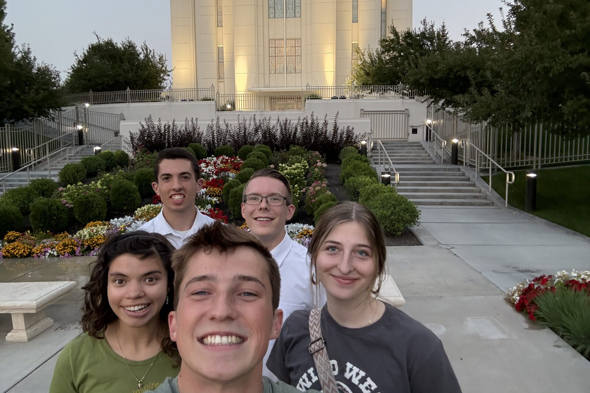

My Story
Nobody is argued into faith. What follows is just what happened, in the order it happened.

The story Enos 1:3
-
01
Before
What would you like here?
Behold, it came to pass that I, Enos, knowing my father that he was a just man — for he taught me in his language, and also in the nurture and admonition of the Lord — and blessed be the name of my God for it.
Enos 1:1What would you like here?
-
02
A Testimony of My Own
What would you like here?
And according to his faith there was a mighty change wrought in his heart. Behold I say unto you that this is all true.
Alma 5:12What would you like here?
-
03
The Call
What would you like here?
Also I heard the voice of the Lord, saying: Whom shall I send, and who will go for us? Then I said: Here am I; send me.
2 Nephi 16:8 · Isaiah 6:8This is the verse on the personal account.
What would you like here?
-
Called to serve
What would you like here?
-
Missionary Training Center
What would you like here?
-
Set apart
What would you like here?
-
-
04
Tennessee
What would you like here? – What would you like here?
Yea, I know that I am nothing; as to my strength I am weak; therefore I will not boast of myself, but I will boast of my God, for in his strength I can do all things.
Alma 26:12Two years in the Tennessee Nashville Mission. Partway through, the mission’s own account filmed him with a guitar, explaining what he had learned about the love of Christ by getting good at something and then giving it away.
What would you like here?
-
05
Coming Home
What would you like here?
I know that which the Lord hath commanded me, and I glory in it. I do not glory of myself, but I glory in that which the Lord hath commanded me; yea, and this is my glory, that perhaps I may be an instrument in the hands of God to bring some soul to repentance; and this is my joy.
Alma 29:9What would you like here?
-
06
Now
Present
The Spirit of the Lord God is upon me; because the Lord hath anointed me to preach good tidings unto the meek.
Isaiah 61:1That verse sits on The Great Mediator, the account he runs now — short videos about the Restoration, living prophets, temples, family history, and the gathering of Israel.
What would you like here?
“And I would not that ye think that I know of myself—not of the temporal but of the spiritual, not of the carnal mind but of God.”
— Alma 36:4
Keep reading
Everyone has a story like this one. Most people just never get asked for it.